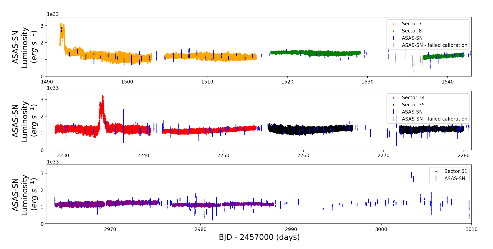
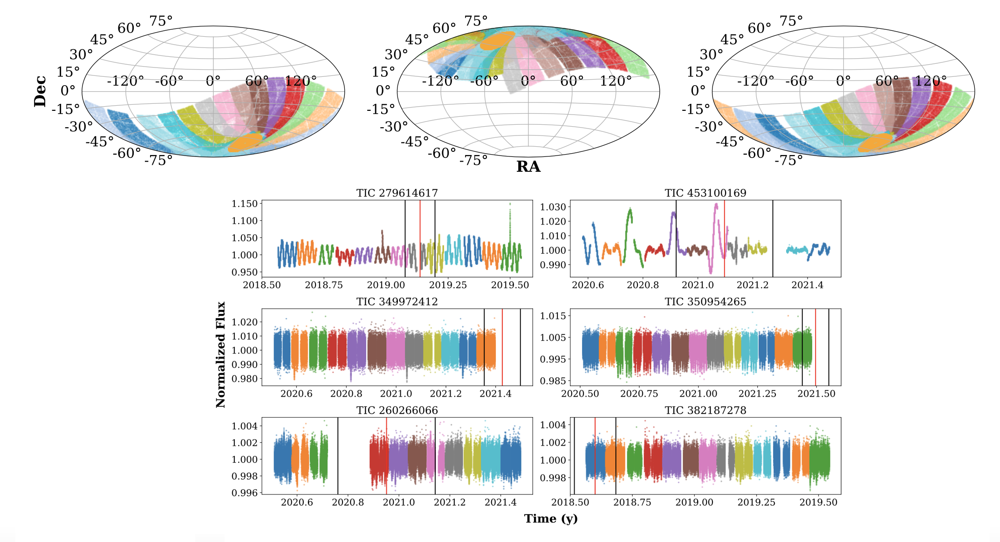
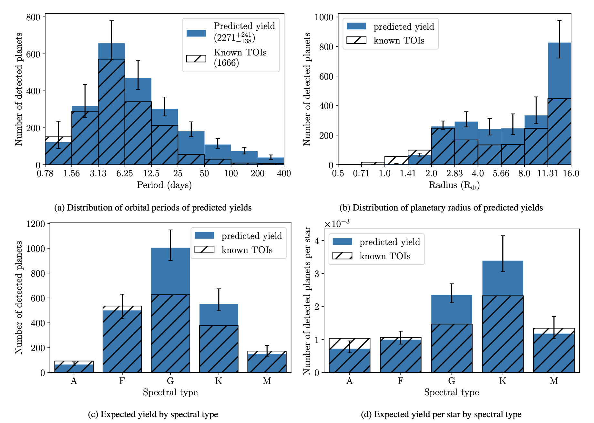

Welcome TESS followers to our latest news bulletin!
This week, we are looking at three recent papers from the archive. Enjoy!
The Peculiar Bursting Nature of CP Pup (Veresvarska et al. 2024) :
CP Puppis is a cataclysmic variable that produced a bright, fast nova explosion in 1942, and has been the subject of intense studies ever since. The system exhibits several peculiarities such as potential orbital period below the period gap (~1.6 hrs vs 3 hrs), uncertain accretion rate, and occasional bursts in ASAS-SN data. Veresvarska et al. (2024) present results from a detailed study of the TESS photometry of CP Pup aimed at better understanding the properties of the system. TESS observed CP Pup at 2-min cadence in Sectors 7, 8, 34, and 35, and at 20-sec cadence in Sector 61, and the authors detected prominent lightcurve modulations in all Sectors, with typical variance timescales of ~10 days. The authors report the detection of two bursts in Sectors 7 and 34 with typical durations of less than 1 day and amplitudes greater than 2. The energies estimated for each burst are ~1x1038 erg and ~6x1037 ergs for Sectors 7 and 34, respectively, with only Sector 34 covering both the pre- and post-burst phases. Additionally, Veresvarska et al. (2024) argue that the known period cluster at ~1.5-1.6 hrs is present in all available TESS data, and identify a persistent signal at 16.29+/-0.04 cycles/day. Assuming CP Pup is a magnetic system, Veresvarska et al. (2024) combine TESS photometry with ASAS-SN data to test whether the detected bursts are consistent with micronova eruptions triggered by localized thermonuclear explosions. While the authors find no conclusive evidence to unambiguously untangle the puzzle of the CP Pup system, thanks to the long baseline provided by TESS data they were able to test various hypotheses for its peculiar observational features and suggest that a long orbital period may be a viable explanation.
Searching the SN 1987A SETI Ellipsoid with TESS (Cabrales et al. 2024) :
SN 1987A was a B3 supergiant in the Large Magellanic Cloud that exploded as a Type II core collapse supernova in May 1987, reaching a peak apparent magnitude of 2.9 and representing the closest observed supernova in more than 400 years. Such spectacular events are suggested to be prime candidates for SETI ellipsoid observations -- a target-prioritization strategy for the detection of technosignatures based on focal ("Shelling") points. In particular, it is hypothesized that such events can provide common reference for one extraterrestrial civilization to broadcast its presence to another without establishing direct contact. Cabrales et al. (2024) present a detailed analysis of and search for anomalous signatures in the TESS lightcurves of targets within the SETI ellipsoid of SN1987A, which is represented by a time-dependent ellipsoid with one foci at SN1987A and the other at Earth. In particular, the authors examined ~15,000 targets in the continuous viewing zone of TESS that were observed at 2-min cadence in at least 11 sectors in a given cycle, regardless of their stellar type, configuration, or habitability prospects. Of these, Cabrales et al. (2024) identify 12 and 24 potential targets of interest within 0.5 lightyears of SN1987A during Cycle 1 and 3, respectively. The authors did not detect anomalous lightcurve features, demonstrated the utility of combining TESS observations with Gaia measurements for a technosignatures search based on a flexible SETI ellipsoid, and argue that the target sample could be increased by decreasing the targets’ distance to Earth. Additionally, Cabrales et al. (2024) suggest that the Full Frame Image lightcurves might be preferred over the 2-min cadence data as the former may not be processed for the removal of long-term trends, and note that longer observations would be needed to monitor targets farther away from Earth. The long-duration, nearly-continuous observations from TESS provided sufficient information to the authors to establish a baseline photometric pattern of the examined targets for the detection of anomalous signatures.
TIaRA TESS 1: Estimating exoplanet yields from Year 1 and Year 3 SPOC lightcurves (Rodel et al. 2024) :
At the time of writing, TESS has enabled the detection of more than 10,000 TESS Objects of Interest (TOIs) as well as more than 3,000 community TOIs (cTOIs). Of these, the relatively longer-period population is particularly interesting as, for example, potential targets for atmospheric characterization – yet more challenging to detect due to the correspondingly smaller number of transits produced over the course of the TESS observations. Rodel et al. (2024) present a detailed analysis of the detection sensitivity of TESS and provide an up-to-date planet yield estimate, with a particular focus on planets with orbital periods longer than 25 days that produce one transit per cycle (“monotransits”). The authors combine the SPOC-FFI lighturves from Cycles 1 and 3 with a custom-designed pipeline and occurrence rates to calculate the corresponding transit probability as a function of the planet’s orbital period (up to 400 days), radius (up to 16 REarth) and stellar type (A through M). Rodel et al. (2024) argue that TESS should be able to detect ~80% of planets with R > 8 REarth and P < 6.25 days, less than half of planets with R < 4 REarth, and less than 1% of Earth-size planets. The authors calculate a total expected yield of ~2271 planets from SPOC FFI Cycles 1 and 3 (including ~215 monotransits), ~400 of which have P > 25 days and ~110 with P > 100 days. Rodel et al. (2024) note that while the estimated yields are 1(2)-sigma consistent with the TOI catalog for planets with P < 6.25(25)days, the expected yields for P > 25 days are 3 times higher than the known candidates. This suggests that many more long-period planets are still expected to be discovered in TESS data.
 Fig. 2: Taken from Veresvarska et al. (2024). Five sectors of TESS data for the cataclysmic variable CP Pup (color coded according to the sector), showing two prominents bursts in Sectors 7 and 34. The corresponding ASAS-SN data is shown in blue.
 Fig. 1: Taken from Cabrales et al. (2023). Upper panels: TESS observations from Cycles 1 (left), 2 (middle), and 3 (right), color coded by sector. The orange regions near the respective poles represent the data sample used to select targets relevant to the SETI ellipsoid of SN1987A. Lower panel: representative TESS lightcurves for targets exhibiting interesting behavior. The vertical red lines represent the crossing time of the SETI ellipsoid.
 Fig. 3: Taken from Rodel et al. (2023). Predicted detection yields from TESS SPOC FFI data from Cycles 1 and 3 (blue) compared to known detections as of 2023-06-15 (black ) as a function of planet period (upper left), planet radius (upper right), and stellar type (lower panels).